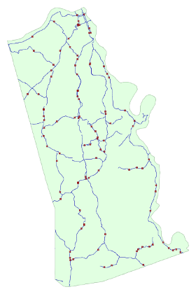

Posts
Over a decade ago I joined Google Adsense with a grand vision of capitalizing on the traffic to my various sites. Before that, there were other providers that promised to turn traffic into cash, but my level of success had always fallen short of the pictures painted by the advertisement providers. Google requires a minimum balance of $100 USD before paying out, and in over ten years I never, ever got close to it. As it turns out, the only real way to convert traffic into money is to have other-worldly amounts of visitors and clicks.
Fast forward to half a year ago when I received a notice from Google describing that my Adsense earnings had been sent to the government for “safe keeping” (insert skepticism here). This is called escheatment. Evidently Google considered my account inactive under the claim that I had not accessed it in quite some time. That may be true, but they could have easily inquired as to whether I was still using the account (I was). After convincing myself that the ensuing fight would be worth the payout, I decided to attempt to get my ten years of earnings back.
Another month went by before I found my earnings listed as unclaimed property. As with so many things in the United States, each state opts to handle the process differently. Many states and jurisdictions contribute to the database at MissingMoney.com and by searching this I found unclaimed property for both myself and multiple other family members.
I went through the process to reclaim my lost funds and began to wait. I waited so long I forgot about it. Then, while furiously sorting through a stack of mail after returning from a long trip I saw it - my lost funds had come. The journey was over four months after it began, and I held in my hand the earnings of over ten years of visits to my various sites. The total was $28.79, or about $3 a year. I probably shouldn’t quit my day job.
Continuing my loose tradition of exploring novel problems in computing and mathematics, I felt the impetus to implement a quick simulation of the novel solution to the 100 prisoners problem. This time, the motivation came from a video from MinutePhysics.
For this problem, there are 100 prisoners and 100 boxes in two separate rooms. Each prisoner and box is numbered from one to 100. The boxes containing the numbers are randomly shuffled. Each prisoner is then given 50 attempts to find their own number. If every prisoner finds their own number, they are all set free. If even one prisoner fails to find their own number, all the prisoners perish. Prisoners that have entered the room with boxes and attempted to locate their own number are not allowed to communicate with prisoners who have yet to enter the room with boxes.
Surprisingly, there exists a solution to the prisoners' dilemma in which their chance of survival is 31.8%. This is significantly higher than if each prisoner randomly chose fifty boxes. In that case, each prisoner has a 50% chance of finding their number. For 100 prisoners, this would make the odds a terrible 0.5^100 or 0.0000000000000000000000000000008%. The solution is for each prisoner to start at their own box, then opening the next box indicated in the chain until their own number is found. By following the breadcrumbs or "chain" that the random shuffle created, the prisoners take advantage of the fact that the the boxes remain identical for each prisoner. Only when a chain is longer than fifty do the prisoners fail to find their number.
This is an elegantly simple solution that is surprisingly easy to implement. To satiate my own curiosity, I decided to write a pseudo-simulation that runs tests consecutively.
import random
simulation_count = 1000
search_count = 50
prisoner_count = 100
simulation_results = [-1] * simulation_count
simulation_passed = 0
for i in range(simulation_count):
prisoners = range(prisoner_count)
boxes = list(prisoners)
random.shuffle(boxes)
results = [0] * prisoner_count
for prisoner in prisoners:
boxes_visited = 0
current_prisoner = prisoner
while boxes_visited < search_count:
if boxes[current_prisoner] == prisoner:
results[prisoner] = 1
break
else:
current_prisoner = boxes[current_prisoner]
boxes_visited += 1
simulation_results[i] = float(sum(results))/float(prisoner_count)
if simulation_results[i] == 1.0:
simulation_passed += 1
print "Success level: " + (
str(100*(float(simulation_passed)
/
float(simulation_count))) + "%")
The results are as expected. Of the three simulations (each with 1000 tests) I ran, all were surprisingly close to the proven number of 31.8%.
Success level: 33.0% Success level: 32.0% Success level: 32.1%
While a one in three chance of survival seems paltry, it sure beats the infinitesimally small odds provided by each prisoner choosing fifty boxes randomly.
Generating random locations along roads using PostGIS
[Category: Programming and Databases] [link] [Date: 2013-12-16 01:32:41]
After my previous article pertaining to rolling accumulated totals using windowed functions (link), it dawned on me that this same technique could be used to generate random placements along a set of roads. In order to do this, each segment is defined as a start and end point of one continuous line - then a random location is chosen along this combined line. Thus, road segments that are longer are more likely to receive placements. The query could be re-written a number of ways to accommodate different needs such as equal-spaced points, no weighting based on segment length, or weighting based on some other variable.
Random locations along a line segment are commonly used as either representations of some form of demand, or as sample points for a study or survey. Perhaps random locations along creeks within a township need to be generated to take an unbiased sample of water quality, or locations are created within an area to represent buildings or people. In my demonstration below, I use 2010 Tiger Edges in Kenton County, KY provided by the Census Bureau and filter only to secondary roads (mtfcc='S1200') to limit my result set.

Randomly generated locations along secondary roads in Kenton County, KYThe picture above shows data generated using the query below.
select ss.id
,sr.tlid
,st_line_interpolate_point(st_linemerge(sr.geom)
,(ss.randlength-sr.startlength)/(sr.endlength-sr.startlength)) geom
from (
select n.n id,random()*l.totallength randlength
from data.numbers n
cross join (select sum(st_length(geom)) totallength
from data.edges2010
where mtfcc='S1200') l
where n.n<=100
) ss
join (
select tlid
,geom
,sum(st_length(geom)) over (partition by 1 order by tlid)-st_length(geom)
startlength
,sum(st_length(geom)) over (partition by 1 order by tlid) endlength
from data.edges2010
where mtfcc='S1200'
) sr on ss.randlength between sr.startlength and sr.endlength
There's quite a bit going on in the query above. The ss subquery uses a numbers table containing a single column counting from 1 to 1,000,000. Numbers tables are useful for expanding information in a query. In this case, the expansion is on the number of random locations to generate. PostgreSQL also has a generate_series() function which can be used to achieve the same result. Within the sr subquery, the magic of windowed function support for aggregates is seen in the startlength and endlength fields. Finally, the linear referencing function st_line_interpolate_point() is used to locate the point along the segment in question.